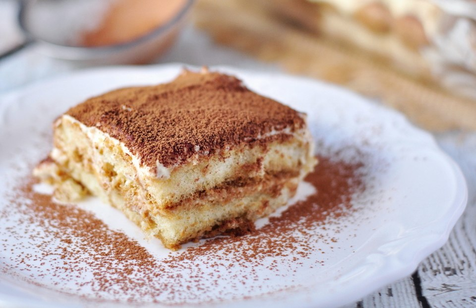

Home
Delicious Tiramisu Recipe

Recipe
This delicious tiramisu made with homemade mascarpone custard (no raw eggs), layers of whipped cream,
and rum and coffee-soaked ladyfingers is an impressive Italian dessert.
Dust the top of the tiramisu with cocoa powder before serving.
Ingredients
- Egg Yolks
- Sugar
- Milk
- Cream
- Vanilla
- Mascarpone
- Coffee
- Rum
- Ladyfingers
- Cocoa Powder
Steps
- Make the Filling: Cook the egg yolks, sugar, and milk until slightly thickened. Let cool slightly, then chill in the fridge for about an hour. When the filling has fully chilled, mix in mascarpone cheese.Make the Filling
- Make the Whipped Cream: Beat heavy cream with vanilla extract until stiff peaks form.Make the Whipped Cream
- Soak the Ladyfingers: Combine coffee and rum in a small bowl. Pour mixture over ladyfingers that have been split in half lengthwise
- Assemble the Tiramisu: Line the bottom of a baking dish with soaked ladyfingers. Spread half of the mascarpone mixture over the ladyfingers, then half of the whipped cream over that. Repeat in the same order. Dust with cocoa powder
- MANGIA! - EAT!